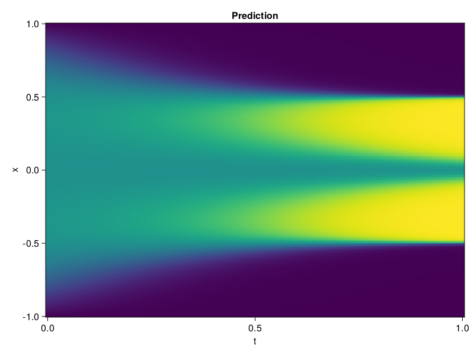

Allen-Cahn Equation with Sequential Training
In this tutorial we are going to solve the Allen-Cahn equation with periodic boundary condition from $t=0$ to $t=1$. The traning process is split into four stages, namely $t\in [0,0.25]$, $t\in [0.0,0.5]$, $t\in [0.0,0.75]$ and $t\in [0.0, 1.0]$.
using ModelingToolkit, IntervalSets
using Sophon
using Optimization, OptimizationOptimJL
@parameters t, x
@variables u(..)
Dₓ = Differential(x)
Dₓ² = Differential(x)^2
Dₜ = Differential(t)
eq = Dₜ(u(x, t)) - 0.0001 * Dₓ²(u(x, t)) + 5 * u(x,t) * (abs2(u(x,t)) - 1.0) ~ 0.0
domain = [x ∈ -1.0..1.0, t ∈ 0.0..0.25]
bcs = [u(x,0) ~ x^2 * cospi(x),
u(-1,t) ~ u(1,t)]
@named allen = PDESystem(eq, bcs, domain, [x, t], [u(x, t)])\[ \begin{align} - 0.0001 \frac{\mathrm{d}}{\mathrm{d}x} \frac{\mathrm{d}}{\mathrm{d}x} u\left( x, t \right) + 5 \left( -1 + \left|u\left( x, t \right)\right|^{2} \right) u\left( x, t \right) + \frac{\mathrm{d}}{\mathrm{d}t} u\left( x, t \right) =& 0 \end{align} \]
Then we define the neural net, the sampler, and the training strategy.
chain = FullyConnected(2, 1, tanh; hidden_dims=16, num_layers=4)
pinn = PINN(chain)
sampler = QuasiRandomSampler(500, (300, 100))
strategy = NonAdaptiveTraining(1, (50, 1))
prob = Sophon.discretize(allen, pinn, sampler, strategy)OptimizationProblem. In-place: true
u0: ComponentVector{Float64}(layer_1 = (weight = [1.7893095016479492 0.7181453704833984; 1.7805601358413696 1.4747803211212158; … ; 1.3684022426605225 0.13352687656879425; -0.9976162910461426 -1.2036182880401611], bias = [0.0; 0.0; … ; 0.0; 0.0;;]), layer_2 = (weight = [0.2549631595611572 -0.6227221488952637 … 0.2620027959346771 0.055883560329675674; 0.6012889742851257 -0.6024377942085266 … 0.5254024863243103 -0.24228300154209137; … ; 0.28416118025779724 0.37342581152915955 … 0.4066304862499237 -0.16124655306339264; 0.35421988368034363 0.7110351324081421 … -0.04011916369199753 -0.41019487380981445], bias = [0.0; 0.0; … ; 0.0; 0.0;;]), layer_3 = (weight = [0.02190173976123333 0.5915446281433105 … 0.37399405241012573 0.3453013002872467; 0.6145669221878052 0.28881749510765076 … -0.4743248522281647 0.43849560618400574; … ; 0.1883620023727417 0.4149128794670105 … -0.3546709418296814 -0.06243076175451279; -0.7200097441673279 0.7158724069595337 … 0.25602230429649353 0.7025204300880432], bias = [0.0; 0.0; … ; 0.0; 0.0;;]), layer_4 = (weight = [-0.08512622863054276 -0.5799843072891235 … 0.09083186835050583 0.33864396810531616; -0.40214136242866516 0.6490305662155151 … -0.23824845254421234 -0.6400371789932251; … ; 0.15764620900154114 0.4768974781036377 … 0.63053297996521 0.604118824005127; 0.04866239055991173 -0.24140186607837677 … -0.6383940577507019 -0.5657781362533569], bias = [0.0; 0.0; … ; 0.0; 0.0;;]), layer_5 = (weight = [0.5736874938011169 -0.6782474517822266 … 0.40514084696769714 -0.673041820526123], bias = [0.0;;]))We solve the equation sequentially in time.
function train(allen, prob, sampler, strategy)
bfgs = BFGS()
res = Optimization.solve(prob, bfgs; maxiters=2000)
for tmax in [0.5, 0.75, 1.0]
allen.domain[2] = t ∈ 0.0..tmax
data = Sophon.sample(allen, sampler)
prob = remake(prob; u0=res.u, p=data)
res = Optimization.solve(prob, bfgs; maxiters=2000)
end
return res
end
res = train(allen, prob, sampler, strategy)u: ComponentVector{Float64}(layer_1 = (weight = [2.686422617254331 0.6962053697973554; 2.0405668479043912 1.5427318179152427; … ; 1.4031000222262469 0.12845314560001025; -0.899791107230477 -1.6988344948837781], bias = [0.09652189926074012; -0.3069140251942766; … ; 1.30978971621315; 1.6964939738302256;;]), layer_2 = (weight = [0.6574352103249675 0.035020815649085935 … 0.145044617277076 0.2724339980648009; 0.5086797320007537 -1.0465817717306574 … 0.20044094474661206 0.06048340854607448; … ; 0.8229022265974749 1.001225000261152 … 0.9035128864373377 -0.37624182470939543; 1.350532310125825 0.9184384237380327 … -0.12306290644711167 -0.04995818789931993], bias = [-0.3886269082880157; -0.12456785130090235; … ; 0.18367264001089956; 0.07317920019609375;;]), layer_3 = (weight = [-0.2984233986072335 0.7058310448910909 … 0.07479650433879378 0.017260502005344815; 0.6348551524294457 0.28025806283621785 … -0.6171877387725525 0.5351002923262623; … ; 0.11614448128474536 0.41397875856286465 … -0.5219552717076831 0.1203430373129874; -0.9285614887782796 1.0790900970054063 … -0.540384533474139 0.31016300521054163], bias = [-0.012457153254143493; 0.4582122701816449; … ; -0.6710591924116162; -0.13192335711599779;;]), layer_4 = (weight = [-0.29623972014577754 -1.1254396730603475 … -0.3010032863003724 0.010866757019645545; -0.3963160985621342 0.5413527624286583 … -0.17865477944960004 -0.6884946717975757; … ; 0.3928758717888855 0.4484885277683973 … 0.6301217898797311 0.2490833467033873; -0.02102050877150168 -0.23354730893279843 … -0.26885984945509617 -0.5251862209791396], bias = [-0.6725073128649125; 0.005480579543599095; … ; -0.09138374923722616; -0.13502419932554247;;]), layer_5 = (weight = [1.22921367073779 -0.632933551858017 … 0.5629267914289211 -0.6966565427739848], bias = [-0.5320805935334193;;]))Let's plot the result.
using CairoMakie
phi = pinn.phi
xs, ts = [infimum(d.domain):0.01:supremum(d.domain) for d in allen.domain]
axis = (xlabel="t", ylabel="x", title="Prediction")
u_pred = [sum(pinn.phi([x, t], res.u)) for x in xs, t in ts]
fig, ax, hm = heatmap(ts, xs, u_pred', axis=axis)